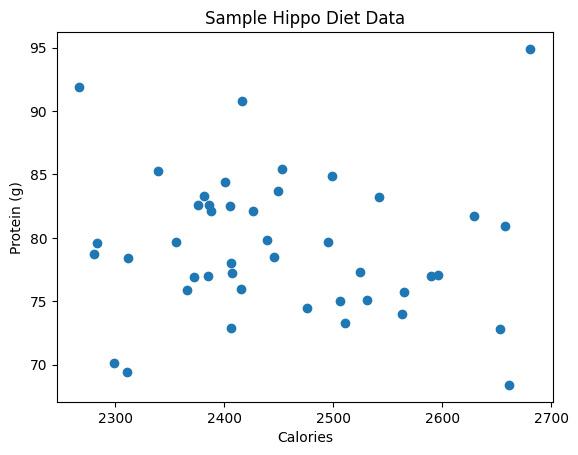

Welcome to the Data Analysis Toolkit for Food and Nutrition Sciences!
Before we dive into exciting topics like nutrient analysis and clinical trials, it’s essential to set up a working environment you can rely on.
🎯 Objectives
By the end of this notebook, you will:
Understand the different ways you can run Python (locally or online)
Set up and verify your Python environment
Install the required libraries
Test everything with a simple example
🐍 What is Python?
Python is a programming language — a way of giving instructions to a computer.
It’s widely used in data science, web development, automation, and more.
In this course, we use Python to: - Read and clean nutrition datasets - Calculate statistics and visualise trends - Build simple models and make predictions
Python is known for being: - Readable 📝 – Code looks a lot like English - Flexible 🔧 – You can use it for almost anything - Popular 🌍 – There’s a huge community and lots of free resources
📘 Click to expand: More about Python (for curious minds)
🧠 Why is it called Python?
Python is named after the comedy group Monty Python, not the snake.
You’ll often see silly or creative examples in the Python community – it’s part of the charm!
🧰 What can Python do?
Beyond data analysis, Python can also: - Power websites (e.g. Instagram, Reddit) - Control robots and IoT devices - Train machine learning models - Automate repetitive tasks (e.g. renaming files)
🔄 What does Python code look like?
# This is Python code!name ="hippo"print(f"Hello, {name}!")
There are two common ways to run Python for data analysis:
🖥️ 1. Local installation
You install Python, Jupyter, and other libraries directly on your computer. This gives you full control and works well for advanced users.
☁️ 2. Google Colab (Recommended for beginners)
This free, web-based platform runs Python in the cloud — no installation required.
It’s ideal for beginners or anyone working on shared machines (e.g. university PCs).
All you need is a Google account.
We’ll design this toolkit to work seamlessly in Google Colab, but you can also download and run it locally if you prefer.
🔍 What is a Python “environment”?
A Python environment is a collection of installed tools and packages. Think of it as your lab bench:
Python is the bench itself.
Packages like pandas, numpy, and matplotlib are your tools.
You can create custom environments to keep tools separate for different projects.
Colab already provides a pre-configured environment — we’ll just add a few extra tools.
🦛
Just like a hippo needs the right waterhole to cool off, you need the right environment to analyse your data comfortably. Let’s get you set up!
📂 Loading Data: Different Ways to Do It
Before we begin analysing data, we need to load it into our Python environment.
There are a few common ways to do this in Colab or Jupyter:
🧳 Option 1: Load from the Internet (Recommended)
If your data is stored in a GitHub repository (like this project), you can automatically download and use it in Google Colab.
This is great because:
You don’t need to upload files manually
Everyone in your group sees the same structure
We’ll start by trying to clone the whole GitHub repository, just like downloading a suitcase full of datasets and notebooks.
📁 Option 2: Upload Manually
If cloning fails or you’re using your own file, you can upload it manually from your computer.
This is helpful if:
You’re working with private data
You’re just testing out a quick idea
🦛
Think of it like this:
The GitHub repository is your shared hippo pantry
Uploading a file manually is like bringing your own snacks
We’ll now run a code cell that first tries the automatic method, and falls back to manual upload if needed.
Don’t worry — it explains everything along the way!
# Setup for Google Colab: Fetch datasets automatically or manually%run ../../bootstrap.py # installs requirements + editable packageimport fns_toolkit as fns
🔧 Installing requirements…
Requirement already satisfied: anyio==4.9.0 in /Users/gunter/Documents/data-analysis-toolkit-FNS/venv/lib/python3.9/site-packages (from -r /Users/gunter/Documents/data-analysis-toolkit-FNS/requirements.txt (line 1)) (4.9.0)
Requirement already satisfied: appnope==0.1.4 in /Users/gunter/Documents/data-analysis-toolkit-FNS/venv/lib/python3.9/site-packages (from -r /Users/gunter/Documents/data-analysis-toolkit-FNS/requirements.txt (line 2)) (0.1.4)
Requirement already satisfied: argon2-cffi==23.1.0 in /Users/gunter/Documents/data-analysis-toolkit-FNS/venv/lib/python3.9/site-packages (from -r /Users/gunter/Documents/data-analysis-toolkit-FNS/requirements.txt (line 3)) (23.1.0)
Requirement already satisfied: argon2-cffi-bindings==21.2.0 in /Users/gunter/Documents/data-analysis-toolkit-FNS/venv/lib/python3.9/site-packages (from -r /Users/gunter/Documents/data-analysis-toolkit-FNS/requirements.txt (line 4)) (21.2.0)
Requirement already satisfied: arrow==1.3.0 in /Users/gunter/Documents/data-analysis-toolkit-FNS/venv/lib/python3.9/site-packages (from -r /Users/gunter/Documents/data-analysis-toolkit-FNS/requirements.txt (line 5)) (1.3.0)
Requirement already satisfied: arviz==0.16.1 in /Users/gunter/Documents/data-analysis-toolkit-FNS/venv/lib/python3.9/site-packages (from -r /Users/gunter/Documents/data-analysis-toolkit-FNS/requirements.txt (line 6)) (0.16.1)
Requirement already satisfied: asttokens==3.0.0 in /Users/gunter/Documents/data-analysis-toolkit-FNS/venv/lib/python3.9/site-packages (from -r /Users/gunter/Documents/data-analysis-toolkit-FNS/requirements.txt (line 7)) (3.0.0)
Requirement already satisfied: async-lru==2.0.5 in /Users/gunter/Documents/data-analysis-toolkit-FNS/venv/lib/python3.9/site-packages (from -r /Users/gunter/Documents/data-analysis-toolkit-FNS/requirements.txt (line 8)) (2.0.5)
Requirement already satisfied: attrs==25.3.0 in /Users/gunter/Documents/data-analysis-toolkit-FNS/venv/lib/python3.9/site-packages (from -r /Users/gunter/Documents/data-analysis-toolkit-FNS/requirements.txt (line 9)) (25.3.0)
Requirement already satisfied: autograd==1.7.0 in /Users/gunter/Documents/data-analysis-toolkit-FNS/venv/lib/python3.9/site-packages (from -r /Users/gunter/Documents/data-analysis-toolkit-FNS/requirements.txt (line 10)) (1.7.0)
Requirement already satisfied: autograd-gamma==0.5.0 in /Users/gunter/Documents/data-analysis-toolkit-FNS/venv/lib/python3.9/site-packages (from -r /Users/gunter/Documents/data-analysis-toolkit-FNS/requirements.txt (line 11)) (0.5.0)
Requirement already satisfied: babel==2.17.0 in /Users/gunter/Documents/data-analysis-toolkit-FNS/venv/lib/python3.9/site-packages (from -r /Users/gunter/Documents/data-analysis-toolkit-FNS/requirements.txt (line 12)) (2.17.0)
Requirement already satisfied: beautifulsoup4==4.13.3 in /Users/gunter/Documents/data-analysis-toolkit-FNS/venv/lib/python3.9/site-packages (from -r /Users/gunter/Documents/data-analysis-toolkit-FNS/requirements.txt (line 13)) (4.13.3)
Requirement already satisfied: bleach==6.2.0 in /Users/gunter/Documents/data-analysis-toolkit-FNS/venv/lib/python3.9/site-packages (from -r /Users/gunter/Documents/data-analysis-toolkit-FNS/requirements.txt (line 14)) (6.2.0)
Requirement already satisfied: cachetools==5.5.2 in /Users/gunter/Documents/data-analysis-toolkit-FNS/venv/lib/python3.9/site-packages (from -r /Users/gunter/Documents/data-analysis-toolkit-FNS/requirements.txt (line 15)) (5.5.2)
Requirement already satisfied: certifi==2025.1.31 in /Users/gunter/Documents/data-analysis-toolkit-FNS/venv/lib/python3.9/site-packages (from -r /Users/gunter/Documents/data-analysis-toolkit-FNS/requirements.txt (line 16)) (2025.1.31)
Requirement already satisfied: cffi==1.17.1 in /Users/gunter/Documents/data-analysis-toolkit-FNS/venv/lib/python3.9/site-packages (from -r /Users/gunter/Documents/data-analysis-toolkit-FNS/requirements.txt (line 17)) (1.17.1)
Requirement already satisfied: charset-normalizer==3.4.1 in /Users/gunter/Documents/data-analysis-toolkit-FNS/venv/lib/python3.9/site-packages (from -r /Users/gunter/Documents/data-analysis-toolkit-FNS/requirements.txt (line 18)) (3.4.1)
Requirement already satisfied: cloudpickle==3.1.1 in /Users/gunter/Documents/data-analysis-toolkit-FNS/venv/lib/python3.9/site-packages (from -r /Users/gunter/Documents/data-analysis-toolkit-FNS/requirements.txt (line 19)) (3.1.1)
Requirement already satisfied: comm==0.2.2 in /Users/gunter/Documents/data-analysis-toolkit-FNS/venv/lib/python3.9/site-packages (from -r /Users/gunter/Documents/data-analysis-toolkit-FNS/requirements.txt (line 20)) (0.2.2)
Requirement already satisfied: cons==0.4.6 in /Users/gunter/Documents/data-analysis-toolkit-FNS/venv/lib/python3.9/site-packages (from -r /Users/gunter/Documents/data-analysis-toolkit-FNS/requirements.txt (line 21)) (0.4.6)
Requirement already satisfied: contourpy==1.3.0 in /Users/gunter/Documents/data-analysis-toolkit-FNS/venv/lib/python3.9/site-packages (from -r /Users/gunter/Documents/data-analysis-toolkit-FNS/requirements.txt (line 22)) (1.3.0)
Requirement already satisfied: cycler==0.12.1 in /Users/gunter/Documents/data-analysis-toolkit-FNS/venv/lib/python3.9/site-packages (from -r /Users/gunter/Documents/data-analysis-toolkit-FNS/requirements.txt (line 23)) (0.12.1)
Requirement already satisfied: debugpy==1.8.13 in /Users/gunter/Documents/data-analysis-toolkit-FNS/venv/lib/python3.9/site-packages (from -r /Users/gunter/Documents/data-analysis-toolkit-FNS/requirements.txt (line 24)) (1.8.13)
Requirement already satisfied: decorator==5.2.1 in /Users/gunter/Documents/data-analysis-toolkit-FNS/venv/lib/python3.9/site-packages (from -r /Users/gunter/Documents/data-analysis-toolkit-FNS/requirements.txt (line 25)) (5.2.1)
Requirement already satisfied: defusedxml==0.7.1 in /Users/gunter/Documents/data-analysis-toolkit-FNS/venv/lib/python3.9/site-packages (from -r /Users/gunter/Documents/data-analysis-toolkit-FNS/requirements.txt (line 26)) (0.7.1)
Requirement already satisfied: et_xmlfile==2.0.0 in /Users/gunter/Documents/data-analysis-toolkit-FNS/venv/lib/python3.9/site-packages (from -r /Users/gunter/Documents/data-analysis-toolkit-FNS/requirements.txt (line 27)) (2.0.0)
Requirement already satisfied: etuples==0.3.9 in /Users/gunter/Documents/data-analysis-toolkit-FNS/venv/lib/python3.9/site-packages (from -r /Users/gunter/Documents/data-analysis-toolkit-FNS/requirements.txt (line 28)) (0.3.9)
Requirement already satisfied: exceptiongroup==1.2.2 in /Users/gunter/Documents/data-analysis-toolkit-FNS/venv/lib/python3.9/site-packages (from -r /Users/gunter/Documents/data-analysis-toolkit-FNS/requirements.txt (line 29)) (1.2.2)
Requirement already satisfied: executing==2.2.0 in /Users/gunter/Documents/data-analysis-toolkit-FNS/venv/lib/python3.9/site-packages (from -r /Users/gunter/Documents/data-analysis-toolkit-FNS/requirements.txt (line 30)) (2.2.0)
Requirement already satisfied: fastjsonschema==2.21.1 in /Users/gunter/Documents/data-analysis-toolkit-FNS/venv/lib/python3.9/site-packages (from -r /Users/gunter/Documents/data-analysis-toolkit-FNS/requirements.txt (line 31)) (2.21.1)
Requirement already satisfied: fastprogress==1.0.3 in /Users/gunter/Documents/data-analysis-toolkit-FNS/venv/lib/python3.9/site-packages (from -r /Users/gunter/Documents/data-analysis-toolkit-FNS/requirements.txt (line 32)) (1.0.3)
Requirement already satisfied: filelock==3.18.0 in /Users/gunter/Documents/data-analysis-toolkit-FNS/venv/lib/python3.9/site-packages (from -r /Users/gunter/Documents/data-analysis-toolkit-FNS/requirements.txt (line 33)) (3.18.0)
Requirement already satisfied: fonttools==4.57.0 in /Users/gunter/Documents/data-analysis-toolkit-FNS/venv/lib/python3.9/site-packages (from -r /Users/gunter/Documents/data-analysis-toolkit-FNS/requirements.txt (line 34)) (4.57.0)
Requirement already satisfied: formulaic==1.1.1 in /Users/gunter/Documents/data-analysis-toolkit-FNS/venv/lib/python3.9/site-packages (from -r /Users/gunter/Documents/data-analysis-toolkit-FNS/requirements.txt (line 35)) (1.1.1)
Requirement already satisfied: fqdn==1.5.1 in /Users/gunter/Documents/data-analysis-toolkit-FNS/venv/lib/python3.9/site-packages (from -r /Users/gunter/Documents/data-analysis-toolkit-FNS/requirements.txt (line 36)) (1.5.1)
Requirement already satisfied: h11==0.14.0 in /Users/gunter/Documents/data-analysis-toolkit-FNS/venv/lib/python3.9/site-packages (from -r /Users/gunter/Documents/data-analysis-toolkit-FNS/requirements.txt (line 37)) (0.14.0)
Requirement already satisfied: h5netcdf==1.6.1 in /Users/gunter/Documents/data-analysis-toolkit-FNS/venv/lib/python3.9/site-packages (from -r /Users/gunter/Documents/data-analysis-toolkit-FNS/requirements.txt (line 38)) (1.6.1)
Requirement already satisfied: h5py==3.13.0 in /Users/gunter/Documents/data-analysis-toolkit-FNS/venv/lib/python3.9/site-packages (from -r /Users/gunter/Documents/data-analysis-toolkit-FNS/requirements.txt (line 39)) (3.13.0)
Requirement already satisfied: httpcore==1.0.7 in /Users/gunter/Documents/data-analysis-toolkit-FNS/venv/lib/python3.9/site-packages (from -r /Users/gunter/Documents/data-analysis-toolkit-FNS/requirements.txt (line 40)) (1.0.7)
Requirement already satisfied: httpx==0.28.1 in /Users/gunter/Documents/data-analysis-toolkit-FNS/venv/lib/python3.9/site-packages (from -r /Users/gunter/Documents/data-analysis-toolkit-FNS/requirements.txt (line 41)) (0.28.1)
Requirement already satisfied: idna==3.10 in /Users/gunter/Documents/data-analysis-toolkit-FNS/venv/lib/python3.9/site-packages (from -r /Users/gunter/Documents/data-analysis-toolkit-FNS/requirements.txt (line 42)) (3.10)
Requirement already satisfied: importlib_metadata==8.6.1 in /Users/gunter/Documents/data-analysis-toolkit-FNS/venv/lib/python3.9/site-packages (from -r /Users/gunter/Documents/data-analysis-toolkit-FNS/requirements.txt (line 43)) (8.6.1)
Requirement already satisfied: importlib_resources==6.5.2 in /Users/gunter/Documents/data-analysis-toolkit-FNS/venv/lib/python3.9/site-packages (from -r /Users/gunter/Documents/data-analysis-toolkit-FNS/requirements.txt (line 44)) (6.5.2)
Requirement already satisfied: interface-meta==1.3.0 in /Users/gunter/Documents/data-analysis-toolkit-FNS/venv/lib/python3.9/site-packages (from -r /Users/gunter/Documents/data-analysis-toolkit-FNS/requirements.txt (line 45)) (1.3.0)
Requirement already satisfied: ipykernel==6.29.5 in /Users/gunter/Documents/data-analysis-toolkit-FNS/venv/lib/python3.9/site-packages (from -r /Users/gunter/Documents/data-analysis-toolkit-FNS/requirements.txt (line 46)) (6.29.5)
Requirement already satisfied: ipython==8.18.1 in /Users/gunter/Documents/data-analysis-toolkit-FNS/venv/lib/python3.9/site-packages (from -r /Users/gunter/Documents/data-analysis-toolkit-FNS/requirements.txt (line 47)) (8.18.1)
Requirement already satisfied: ipywidgets==8.1.6 in /Users/gunter/Documents/data-analysis-toolkit-FNS/venv/lib/python3.9/site-packages (from -r /Users/gunter/Documents/data-analysis-toolkit-FNS/requirements.txt (line 48)) (8.1.6)
Requirement already satisfied: isoduration==20.11.0 in /Users/gunter/Documents/data-analysis-toolkit-FNS/venv/lib/python3.9/site-packages (from -r /Users/gunter/Documents/data-analysis-toolkit-FNS/requirements.txt (line 49)) (20.11.0)
Requirement already satisfied: jedi==0.19.2 in /Users/gunter/Documents/data-analysis-toolkit-FNS/venv/lib/python3.9/site-packages (from -r /Users/gunter/Documents/data-analysis-toolkit-FNS/requirements.txt (line 50)) (0.19.2)
Requirement already satisfied: Jinja2==3.1.6 in /Users/gunter/Documents/data-analysis-toolkit-FNS/venv/lib/python3.9/site-packages (from -r /Users/gunter/Documents/data-analysis-toolkit-FNS/requirements.txt (line 51)) (3.1.6)
Requirement already satisfied: json5==0.12.0 in /Users/gunter/Documents/data-analysis-toolkit-FNS/venv/lib/python3.9/site-packages (from -r /Users/gunter/Documents/data-analysis-toolkit-FNS/requirements.txt (line 52)) (0.12.0)
Requirement already satisfied: jsonpointer==3.0.0 in /Users/gunter/Documents/data-analysis-toolkit-FNS/venv/lib/python3.9/site-packages (from -r /Users/gunter/Documents/data-analysis-toolkit-FNS/requirements.txt (line 53)) (3.0.0)
Requirement already satisfied: jsonschema==4.23.0 in /Users/gunter/Documents/data-analysis-toolkit-FNS/venv/lib/python3.9/site-packages (from -r /Users/gunter/Documents/data-analysis-toolkit-FNS/requirements.txt (line 54)) (4.23.0)
Requirement already satisfied: jsonschema-specifications==2024.10.1 in /Users/gunter/Documents/data-analysis-toolkit-FNS/venv/lib/python3.9/site-packages (from -r /Users/gunter/Documents/data-analysis-toolkit-FNS/requirements.txt (line 55)) (2024.10.1)
Requirement already satisfied: jupyter==1.1.1 in /Users/gunter/Documents/data-analysis-toolkit-FNS/venv/lib/python3.9/site-packages (from -r /Users/gunter/Documents/data-analysis-toolkit-FNS/requirements.txt (line 56)) (1.1.1)
Requirement already satisfied: jupyter-console==6.6.3 in /Users/gunter/Documents/data-analysis-toolkit-FNS/venv/lib/python3.9/site-packages (from -r /Users/gunter/Documents/data-analysis-toolkit-FNS/requirements.txt (line 57)) (6.6.3)
Requirement already satisfied: jupyter-events==0.12.0 in /Users/gunter/Documents/data-analysis-toolkit-FNS/venv/lib/python3.9/site-packages (from -r /Users/gunter/Documents/data-analysis-toolkit-FNS/requirements.txt (line 58)) (0.12.0)
Requirement already satisfied: jupyter-lsp==2.2.5 in /Users/gunter/Documents/data-analysis-toolkit-FNS/venv/lib/python3.9/site-packages (from -r /Users/gunter/Documents/data-analysis-toolkit-FNS/requirements.txt (line 59)) (2.2.5)
Requirement already satisfied: jupyter_client==8.6.3 in /Users/gunter/Documents/data-analysis-toolkit-FNS/venv/lib/python3.9/site-packages (from -r /Users/gunter/Documents/data-analysis-toolkit-FNS/requirements.txt (line 60)) (8.6.3)
Requirement already satisfied: jupyter_core==5.7.2 in /Users/gunter/Documents/data-analysis-toolkit-FNS/venv/lib/python3.9/site-packages (from -r /Users/gunter/Documents/data-analysis-toolkit-FNS/requirements.txt (line 61)) (5.7.2)
Requirement already satisfied: jupyter_server==2.15.0 in /Users/gunter/Documents/data-analysis-toolkit-FNS/venv/lib/python3.9/site-packages (from -r /Users/gunter/Documents/data-analysis-toolkit-FNS/requirements.txt (line 62)) (2.15.0)
Requirement already satisfied: jupyter_server_terminals==0.5.3 in /Users/gunter/Documents/data-analysis-toolkit-FNS/venv/lib/python3.9/site-packages (from -r /Users/gunter/Documents/data-analysis-toolkit-FNS/requirements.txt (line 63)) (0.5.3)
Requirement already satisfied: jupyterlab==4.4.0 in /Users/gunter/Documents/data-analysis-toolkit-FNS/venv/lib/python3.9/site-packages (from -r /Users/gunter/Documents/data-analysis-toolkit-FNS/requirements.txt (line 64)) (4.4.0)
Requirement already satisfied: jupyterlab_pygments==0.3.0 in /Users/gunter/Documents/data-analysis-toolkit-FNS/venv/lib/python3.9/site-packages (from -r /Users/gunter/Documents/data-analysis-toolkit-FNS/requirements.txt (line 65)) (0.3.0)
Requirement already satisfied: jupyterlab_server==2.27.3 in /Users/gunter/Documents/data-analysis-toolkit-FNS/venv/lib/python3.9/site-packages (from -r /Users/gunter/Documents/data-analysis-toolkit-FNS/requirements.txt (line 66)) (2.27.3)
Requirement already satisfied: jupyterlab_widgets==3.0.14 in /Users/gunter/Documents/data-analysis-toolkit-FNS/venv/lib/python3.9/site-packages (from -r /Users/gunter/Documents/data-analysis-toolkit-FNS/requirements.txt (line 67)) (3.0.14)
Requirement already satisfied: kiwisolver==1.4.7 in /Users/gunter/Documents/data-analysis-toolkit-FNS/venv/lib/python3.9/site-packages (from -r /Users/gunter/Documents/data-analysis-toolkit-FNS/requirements.txt (line 68)) (1.4.7)
Requirement already satisfied: lifelines==0.30.0 in /Users/gunter/Documents/data-analysis-toolkit-FNS/venv/lib/python3.9/site-packages (from -r /Users/gunter/Documents/data-analysis-toolkit-FNS/requirements.txt (line 69)) (0.30.0)
Requirement already satisfied: logical-unification==0.4.6 in /Users/gunter/Documents/data-analysis-toolkit-FNS/venv/lib/python3.9/site-packages (from -r /Users/gunter/Documents/data-analysis-toolkit-FNS/requirements.txt (line 70)) (0.4.6)
Requirement already satisfied: MarkupSafe==3.0.2 in /Users/gunter/Documents/data-analysis-toolkit-FNS/venv/lib/python3.9/site-packages (from -r /Users/gunter/Documents/data-analysis-toolkit-FNS/requirements.txt (line 71)) (3.0.2)
Requirement already satisfied: matplotlib==3.9.4 in /Users/gunter/Documents/data-analysis-toolkit-FNS/venv/lib/python3.9/site-packages (from -r /Users/gunter/Documents/data-analysis-toolkit-FNS/requirements.txt (line 72)) (3.9.4)
Requirement already satisfied: matplotlib-inline==0.1.7 in /Users/gunter/Documents/data-analysis-toolkit-FNS/venv/lib/python3.9/site-packages (from -r /Users/gunter/Documents/data-analysis-toolkit-FNS/requirements.txt (line 73)) (0.1.7)
Requirement already satisfied: miniKanren==1.0.3 in /Users/gunter/Documents/data-analysis-toolkit-FNS/venv/lib/python3.9/site-packages (from -r /Users/gunter/Documents/data-analysis-toolkit-FNS/requirements.txt (line 74)) (1.0.3)
Requirement already satisfied: mistune==3.1.3 in /Users/gunter/Documents/data-analysis-toolkit-FNS/venv/lib/python3.9/site-packages (from -r /Users/gunter/Documents/data-analysis-toolkit-FNS/requirements.txt (line 75)) (3.1.3)
Requirement already satisfied: multipledispatch==1.0.0 in /Users/gunter/Documents/data-analysis-toolkit-FNS/venv/lib/python3.9/site-packages (from -r /Users/gunter/Documents/data-analysis-toolkit-FNS/requirements.txt (line 76)) (1.0.0)
Requirement already satisfied: nbclient==0.10.2 in /Users/gunter/Documents/data-analysis-toolkit-FNS/venv/lib/python3.9/site-packages (from -r /Users/gunter/Documents/data-analysis-toolkit-FNS/requirements.txt (line 77)) (0.10.2)
Requirement already satisfied: nbconvert==7.16.6 in /Users/gunter/Documents/data-analysis-toolkit-FNS/venv/lib/python3.9/site-packages (from -r /Users/gunter/Documents/data-analysis-toolkit-FNS/requirements.txt (line 78)) (7.16.6)
Requirement already satisfied: nbformat==5.10.4 in /Users/gunter/Documents/data-analysis-toolkit-FNS/venv/lib/python3.9/site-packages (from -r /Users/gunter/Documents/data-analysis-toolkit-FNS/requirements.txt (line 79)) (5.10.4)
Requirement already satisfied: nest-asyncio==1.6.0 in /Users/gunter/Documents/data-analysis-toolkit-FNS/venv/lib/python3.9/site-packages (from -r /Users/gunter/Documents/data-analysis-toolkit-FNS/requirements.txt (line 80)) (1.6.0)
Requirement already satisfied: notebook==7.4.0 in /Users/gunter/Documents/data-analysis-toolkit-FNS/venv/lib/python3.9/site-packages (from -r /Users/gunter/Documents/data-analysis-toolkit-FNS/requirements.txt (line 81)) (7.4.0)
Requirement already satisfied: notebook_shim==0.2.4 in /Users/gunter/Documents/data-analysis-toolkit-FNS/venv/lib/python3.9/site-packages (from -r /Users/gunter/Documents/data-analysis-toolkit-FNS/requirements.txt (line 82)) (0.2.4)
Requirement already satisfied: numpy==1.26.4 in /Users/gunter/Documents/data-analysis-toolkit-FNS/venv/lib/python3.9/site-packages (from -r /Users/gunter/Documents/data-analysis-toolkit-FNS/requirements.txt (line 83)) (1.26.4)
Requirement already satisfied: openpyxl==3.1.5 in /Users/gunter/Documents/data-analysis-toolkit-FNS/venv/lib/python3.9/site-packages (from -r /Users/gunter/Documents/data-analysis-toolkit-FNS/requirements.txt (line 84)) (3.1.5)
Requirement already satisfied: overrides==7.7.0 in /Users/gunter/Documents/data-analysis-toolkit-FNS/venv/lib/python3.9/site-packages (from -r /Users/gunter/Documents/data-analysis-toolkit-FNS/requirements.txt (line 85)) (7.7.0)
Requirement already satisfied: packaging==24.2 in /Users/gunter/Documents/data-analysis-toolkit-FNS/venv/lib/python3.9/site-packages (from -r /Users/gunter/Documents/data-analysis-toolkit-FNS/requirements.txt (line 86)) (24.2)
Requirement already satisfied: pandas==2.2.3 in /Users/gunter/Documents/data-analysis-toolkit-FNS/venv/lib/python3.9/site-packages (from -r /Users/gunter/Documents/data-analysis-toolkit-FNS/requirements.txt (line 87)) (2.2.3)
Requirement already satisfied: pandocfilters==1.5.1 in /Users/gunter/Documents/data-analysis-toolkit-FNS/venv/lib/python3.9/site-packages (from -r /Users/gunter/Documents/data-analysis-toolkit-FNS/requirements.txt (line 88)) (1.5.1)
Requirement already satisfied: parso==0.8.4 in /Users/gunter/Documents/data-analysis-toolkit-FNS/venv/lib/python3.9/site-packages (from -r /Users/gunter/Documents/data-analysis-toolkit-FNS/requirements.txt (line 89)) (0.8.4)
Requirement already satisfied: patsy==1.0.1 in /Users/gunter/Documents/data-analysis-toolkit-FNS/venv/lib/python3.9/site-packages (from -r /Users/gunter/Documents/data-analysis-toolkit-FNS/requirements.txt (line 90)) (1.0.1)
Requirement already satisfied: pexpect==4.9.0 in /Users/gunter/Documents/data-analysis-toolkit-FNS/venv/lib/python3.9/site-packages (from -r /Users/gunter/Documents/data-analysis-toolkit-FNS/requirements.txt (line 91)) (4.9.0)
Requirement already satisfied: pillow==11.1.0 in /Users/gunter/Documents/data-analysis-toolkit-FNS/venv/lib/python3.9/site-packages (from -r /Users/gunter/Documents/data-analysis-toolkit-FNS/requirements.txt (line 92)) (11.1.0)
Requirement already satisfied: platformdirs==4.3.7 in /Users/gunter/Documents/data-analysis-toolkit-FNS/venv/lib/python3.9/site-packages (from -r /Users/gunter/Documents/data-analysis-toolkit-FNS/requirements.txt (line 93)) (4.3.7)
Requirement already satisfied: prometheus_client==0.21.1 in /Users/gunter/Documents/data-analysis-toolkit-FNS/venv/lib/python3.9/site-packages (from -r /Users/gunter/Documents/data-analysis-toolkit-FNS/requirements.txt (line 94)) (0.21.1)
Requirement already satisfied: prompt_toolkit==3.0.50 in /Users/gunter/Documents/data-analysis-toolkit-FNS/venv/lib/python3.9/site-packages (from -r /Users/gunter/Documents/data-analysis-toolkit-FNS/requirements.txt (line 95)) (3.0.50)
Requirement already satisfied: psutil==7.0.0 in /Users/gunter/Documents/data-analysis-toolkit-FNS/venv/lib/python3.9/site-packages (from -r /Users/gunter/Documents/data-analysis-toolkit-FNS/requirements.txt (line 96)) (7.0.0)
Requirement already satisfied: ptyprocess==0.7.0 in /Users/gunter/Documents/data-analysis-toolkit-FNS/venv/lib/python3.9/site-packages (from -r /Users/gunter/Documents/data-analysis-toolkit-FNS/requirements.txt (line 97)) (0.7.0)
Requirement already satisfied: pure_eval==0.2.3 in /Users/gunter/Documents/data-analysis-toolkit-FNS/venv/lib/python3.9/site-packages (from -r /Users/gunter/Documents/data-analysis-toolkit-FNS/requirements.txt (line 98)) (0.2.3)
Requirement already satisfied: pycparser==2.22 in /Users/gunter/Documents/data-analysis-toolkit-FNS/venv/lib/python3.9/site-packages (from -r /Users/gunter/Documents/data-analysis-toolkit-FNS/requirements.txt (line 99)) (2.22)
Requirement already satisfied: Pygments==2.19.1 in /Users/gunter/Documents/data-analysis-toolkit-FNS/venv/lib/python3.9/site-packages (from -r /Users/gunter/Documents/data-analysis-toolkit-FNS/requirements.txt (line 100)) (2.19.1)
Requirement already satisfied: pymc==5.9.0 in /Users/gunter/Documents/data-analysis-toolkit-FNS/venv/lib/python3.9/site-packages (from -r /Users/gunter/Documents/data-analysis-toolkit-FNS/requirements.txt (line 101)) (5.9.0)
Requirement already satisfied: pyparsing==3.2.3 in /Users/gunter/Documents/data-analysis-toolkit-FNS/venv/lib/python3.9/site-packages (from -r /Users/gunter/Documents/data-analysis-toolkit-FNS/requirements.txt (line 102)) (3.2.3)
Requirement already satisfied: pytensor==2.17.4 in /Users/gunter/Documents/data-analysis-toolkit-FNS/venv/lib/python3.9/site-packages (from -r /Users/gunter/Documents/data-analysis-toolkit-FNS/requirements.txt (line 103)) (2.17.4)
Requirement already satisfied: python-dateutil==2.9.0.post0 in /Users/gunter/Documents/data-analysis-toolkit-FNS/venv/lib/python3.9/site-packages (from -r /Users/gunter/Documents/data-analysis-toolkit-FNS/requirements.txt (line 104)) (2.9.0.post0)
Requirement already satisfied: python-json-logger==3.3.0 in /Users/gunter/Documents/data-analysis-toolkit-FNS/venv/lib/python3.9/site-packages (from -r /Users/gunter/Documents/data-analysis-toolkit-FNS/requirements.txt (line 105)) (3.3.0)
Requirement already satisfied: pytz==2025.2 in /Users/gunter/Documents/data-analysis-toolkit-FNS/venv/lib/python3.9/site-packages (from -r /Users/gunter/Documents/data-analysis-toolkit-FNS/requirements.txt (line 106)) (2025.2)
Requirement already satisfied: PyYAML==6.0.2 in /Users/gunter/Documents/data-analysis-toolkit-FNS/venv/lib/python3.9/site-packages (from -r /Users/gunter/Documents/data-analysis-toolkit-FNS/requirements.txt (line 107)) (6.0.2)
Requirement already satisfied: pyzmq==26.4.0 in /Users/gunter/Documents/data-analysis-toolkit-FNS/venv/lib/python3.9/site-packages (from -r /Users/gunter/Documents/data-analysis-toolkit-FNS/requirements.txt (line 108)) (26.4.0)
Requirement already satisfied: referencing==0.36.2 in /Users/gunter/Documents/data-analysis-toolkit-FNS/venv/lib/python3.9/site-packages (from -r /Users/gunter/Documents/data-analysis-toolkit-FNS/requirements.txt (line 109)) (0.36.2)
Requirement already satisfied: requests==2.32.3 in /Users/gunter/Documents/data-analysis-toolkit-FNS/venv/lib/python3.9/site-packages (from -r /Users/gunter/Documents/data-analysis-toolkit-FNS/requirements.txt (line 110)) (2.32.3)
Requirement already satisfied: rfc3339-validator==0.1.4 in /Users/gunter/Documents/data-analysis-toolkit-FNS/venv/lib/python3.9/site-packages (from -r /Users/gunter/Documents/data-analysis-toolkit-FNS/requirements.txt (line 111)) (0.1.4)
Requirement already satisfied: rfc3986-validator==0.1.1 in /Users/gunter/Documents/data-analysis-toolkit-FNS/venv/lib/python3.9/site-packages (from -r /Users/gunter/Documents/data-analysis-toolkit-FNS/requirements.txt (line 112)) (0.1.1)
Requirement already satisfied: rpds-py==0.24.0 in /Users/gunter/Documents/data-analysis-toolkit-FNS/venv/lib/python3.9/site-packages (from -r /Users/gunter/Documents/data-analysis-toolkit-FNS/requirements.txt (line 113)) (0.24.0)
Requirement already satisfied: scipy==1.11.3 in /Users/gunter/Documents/data-analysis-toolkit-FNS/venv/lib/python3.9/site-packages (from -r /Users/gunter/Documents/data-analysis-toolkit-FNS/requirements.txt (line 114)) (1.11.3)
Requirement already satisfied: seaborn==0.13.2 in /Users/gunter/Documents/data-analysis-toolkit-FNS/venv/lib/python3.9/site-packages (from -r /Users/gunter/Documents/data-analysis-toolkit-FNS/requirements.txt (line 115)) (0.13.2)
Requirement already satisfied: Send2Trash==1.8.3 in /Users/gunter/Documents/data-analysis-toolkit-FNS/venv/lib/python3.9/site-packages (from -r /Users/gunter/Documents/data-analysis-toolkit-FNS/requirements.txt (line 116)) (1.8.3)
Requirement already satisfied: six==1.17.0 in /Users/gunter/Documents/data-analysis-toolkit-FNS/venv/lib/python3.9/site-packages (from -r /Users/gunter/Documents/data-analysis-toolkit-FNS/requirements.txt (line 117)) (1.17.0)
Requirement already satisfied: sniffio==1.3.1 in /Users/gunter/Documents/data-analysis-toolkit-FNS/venv/lib/python3.9/site-packages (from -r /Users/gunter/Documents/data-analysis-toolkit-FNS/requirements.txt (line 118)) (1.3.1)
Requirement already satisfied: soupsieve==2.6 in /Users/gunter/Documents/data-analysis-toolkit-FNS/venv/lib/python3.9/site-packages (from -r /Users/gunter/Documents/data-analysis-toolkit-FNS/requirements.txt (line 119)) (2.6)
Requirement already satisfied: stack-data==0.6.3 in /Users/gunter/Documents/data-analysis-toolkit-FNS/venv/lib/python3.9/site-packages (from -r /Users/gunter/Documents/data-analysis-toolkit-FNS/requirements.txt (line 120)) (0.6.3)
Requirement already satisfied: statsmodels==0.14.4 in /Users/gunter/Documents/data-analysis-toolkit-FNS/venv/lib/python3.9/site-packages (from -r /Users/gunter/Documents/data-analysis-toolkit-FNS/requirements.txt (line 121)) (0.14.4)
Requirement already satisfied: tableone==0.9.4 in /Users/gunter/Documents/data-analysis-toolkit-FNS/venv/lib/python3.9/site-packages (from -r /Users/gunter/Documents/data-analysis-toolkit-FNS/requirements.txt (line 122)) (0.9.4)
Requirement already satisfied: tabulate==0.9.0 in /Users/gunter/Documents/data-analysis-toolkit-FNS/venv/lib/python3.9/site-packages (from -r /Users/gunter/Documents/data-analysis-toolkit-FNS/requirements.txt (line 123)) (0.9.0)
Requirement already satisfied: terminado==0.18.1 in /Users/gunter/Documents/data-analysis-toolkit-FNS/venv/lib/python3.9/site-packages (from -r /Users/gunter/Documents/data-analysis-toolkit-FNS/requirements.txt (line 124)) (0.18.1)
Requirement already satisfied: tinycss2==1.4.0 in /Users/gunter/Documents/data-analysis-toolkit-FNS/venv/lib/python3.9/site-packages (from -r /Users/gunter/Documents/data-analysis-toolkit-FNS/requirements.txt (line 125)) (1.4.0)
Requirement already satisfied: tomli==2.2.1 in /Users/gunter/Documents/data-analysis-toolkit-FNS/venv/lib/python3.9/site-packages (from -r /Users/gunter/Documents/data-analysis-toolkit-FNS/requirements.txt (line 126)) (2.2.1)
Requirement already satisfied: toolz==1.0.0 in /Users/gunter/Documents/data-analysis-toolkit-FNS/venv/lib/python3.9/site-packages (from -r /Users/gunter/Documents/data-analysis-toolkit-FNS/requirements.txt (line 127)) (1.0.0)
Requirement already satisfied: tornado==6.4.2 in /Users/gunter/Documents/data-analysis-toolkit-FNS/venv/lib/python3.9/site-packages (from -r /Users/gunter/Documents/data-analysis-toolkit-FNS/requirements.txt (line 128)) (6.4.2)
Requirement already satisfied: traitlets==5.14.3 in /Users/gunter/Documents/data-analysis-toolkit-FNS/venv/lib/python3.9/site-packages (from -r /Users/gunter/Documents/data-analysis-toolkit-FNS/requirements.txt (line 129)) (5.14.3)
Requirement already satisfied: types-python-dateutil==2.9.0.20241206 in /Users/gunter/Documents/data-analysis-toolkit-FNS/venv/lib/python3.9/site-packages (from -r /Users/gunter/Documents/data-analysis-toolkit-FNS/requirements.txt (line 130)) (2.9.0.20241206)
Requirement already satisfied: typing_extensions==4.13.1 in /Users/gunter/Documents/data-analysis-toolkit-FNS/venv/lib/python3.9/site-packages (from -r /Users/gunter/Documents/data-analysis-toolkit-FNS/requirements.txt (line 131)) (4.13.1)
Requirement already satisfied: tzdata==2025.2 in /Users/gunter/Documents/data-analysis-toolkit-FNS/venv/lib/python3.9/site-packages (from -r /Users/gunter/Documents/data-analysis-toolkit-FNS/requirements.txt (line 132)) (2025.2)
Requirement already satisfied: uri-template==1.3.0 in /Users/gunter/Documents/data-analysis-toolkit-FNS/venv/lib/python3.9/site-packages (from -r /Users/gunter/Documents/data-analysis-toolkit-FNS/requirements.txt (line 133)) (1.3.0)
Requirement already satisfied: urllib3==2.3.0 in /Users/gunter/Documents/data-analysis-toolkit-FNS/venv/lib/python3.9/site-packages (from -r /Users/gunter/Documents/data-analysis-toolkit-FNS/requirements.txt (line 134)) (2.3.0)
Requirement already satisfied: wcwidth==0.2.13 in /Users/gunter/Documents/data-analysis-toolkit-FNS/venv/lib/python3.9/site-packages (from -r /Users/gunter/Documents/data-analysis-toolkit-FNS/requirements.txt (line 135)) (0.2.13)
Requirement already satisfied: webcolors==24.11.1 in /Users/gunter/Documents/data-analysis-toolkit-FNS/venv/lib/python3.9/site-packages (from -r /Users/gunter/Documents/data-analysis-toolkit-FNS/requirements.txt (line 136)) (24.11.1)
Requirement already satisfied: webencodings==0.5.1 in /Users/gunter/Documents/data-analysis-toolkit-FNS/venv/lib/python3.9/site-packages (from -r /Users/gunter/Documents/data-analysis-toolkit-FNS/requirements.txt (line 137)) (0.5.1)
Requirement already satisfied: websocket-client==1.8.0 in /Users/gunter/Documents/data-analysis-toolkit-FNS/venv/lib/python3.9/site-packages (from -r /Users/gunter/Documents/data-analysis-toolkit-FNS/requirements.txt (line 138)) (1.8.0)
Requirement already satisfied: widgetsnbextension==4.0.14 in /Users/gunter/Documents/data-analysis-toolkit-FNS/venv/lib/python3.9/site-packages (from -r /Users/gunter/Documents/data-analysis-toolkit-FNS/requirements.txt (line 139)) (4.0.14)
Requirement already satisfied: wrapt==1.17.2 in /Users/gunter/Documents/data-analysis-toolkit-FNS/venv/lib/python3.9/site-packages (from -r /Users/gunter/Documents/data-analysis-toolkit-FNS/requirements.txt (line 140)) (1.17.2)
Requirement already satisfied: xarray==2024.7.0 in /Users/gunter/Documents/data-analysis-toolkit-FNS/venv/lib/python3.9/site-packages (from -r /Users/gunter/Documents/data-analysis-toolkit-FNS/requirements.txt (line 141)) (2024.7.0)
Requirement already satisfied: xarray-einstats==0.7.0 in /Users/gunter/Documents/data-analysis-toolkit-FNS/venv/lib/python3.9/site-packages (from -r /Users/gunter/Documents/data-analysis-toolkit-FNS/requirements.txt (line 142)) (0.7.0)
Requirement already satisfied: zipp==3.21.0 in /Users/gunter/Documents/data-analysis-toolkit-FNS/venv/lib/python3.9/site-packages (from -r /Users/gunter/Documents/data-analysis-toolkit-FNS/requirements.txt (line 143)) (3.21.0)
Requirement already satisfied: setuptools>=60.0.0 in /Users/gunter/Documents/data-analysis-toolkit-FNS/venv/lib/python3.9/site-packages (from arviz==0.16.1->-r /Users/gunter/Documents/data-analysis-toolkit-FNS/requirements.txt (line 6)) (79.0.1)
🔧 Installing toolkit editable…
Obtaining file:///Users/gunter/Documents/data-analysis-toolkit-FNS
Installing build dependencies: started
Installing build dependencies: finished with status 'done'
Checking if build backend supports build_editable: started
Checking if build backend supports build_editable: finished with status 'done'
Getting requirements to build editable: started
Getting requirements to build editable: finished with status 'done'
Preparing editable metadata (pyproject.toml): started
Preparing editable metadata (pyproject.toml): finished with status 'done'
Requirement already satisfied: anyio==4.9.0 in /Users/gunter/Documents/data-analysis-toolkit-FNS/venv/lib/python3.9/site-packages (from data-analysis-toolkit-fns==2.0.0) (4.9.0)
Requirement already satisfied: appnope==0.1.4 in /Users/gunter/Documents/data-analysis-toolkit-FNS/venv/lib/python3.9/site-packages (from data-analysis-toolkit-fns==2.0.0) (0.1.4)
Requirement already satisfied: argon2-cffi==23.1.0 in /Users/gunter/Documents/data-analysis-toolkit-FNS/venv/lib/python3.9/site-packages (from data-analysis-toolkit-fns==2.0.0) (23.1.0)
Requirement already satisfied: argon2-cffi-bindings==21.2.0 in /Users/gunter/Documents/data-analysis-toolkit-FNS/venv/lib/python3.9/site-packages (from data-analysis-toolkit-fns==2.0.0) (21.2.0)
Requirement already satisfied: arrow==1.3.0 in /Users/gunter/Documents/data-analysis-toolkit-FNS/venv/lib/python3.9/site-packages (from data-analysis-toolkit-fns==2.0.0) (1.3.0)
Requirement already satisfied: arviz==0.16.1 in /Users/gunter/Documents/data-analysis-toolkit-FNS/venv/lib/python3.9/site-packages (from data-analysis-toolkit-fns==2.0.0) (0.16.1)
Requirement already satisfied: asttokens==3.0.0 in /Users/gunter/Documents/data-analysis-toolkit-FNS/venv/lib/python3.9/site-packages (from data-analysis-toolkit-fns==2.0.0) (3.0.0)
Requirement already satisfied: async-lru==2.0.5 in /Users/gunter/Documents/data-analysis-toolkit-FNS/venv/lib/python3.9/site-packages (from data-analysis-toolkit-fns==2.0.0) (2.0.5)
Requirement already satisfied: attrs==25.3.0 in /Users/gunter/Documents/data-analysis-toolkit-FNS/venv/lib/python3.9/site-packages (from data-analysis-toolkit-fns==2.0.0) (25.3.0)
Requirement already satisfied: autograd==1.7.0 in /Users/gunter/Documents/data-analysis-toolkit-FNS/venv/lib/python3.9/site-packages (from data-analysis-toolkit-fns==2.0.0) (1.7.0)
Requirement already satisfied: autograd-gamma==0.5.0 in /Users/gunter/Documents/data-analysis-toolkit-FNS/venv/lib/python3.9/site-packages (from data-analysis-toolkit-fns==2.0.0) (0.5.0)
Requirement already satisfied: babel==2.17.0 in /Users/gunter/Documents/data-analysis-toolkit-FNS/venv/lib/python3.9/site-packages (from data-analysis-toolkit-fns==2.0.0) (2.17.0)
Requirement already satisfied: beautifulsoup4==4.13.3 in /Users/gunter/Documents/data-analysis-toolkit-FNS/venv/lib/python3.9/site-packages (from data-analysis-toolkit-fns==2.0.0) (4.13.3)
Requirement already satisfied: bleach==6.2.0 in /Users/gunter/Documents/data-analysis-toolkit-FNS/venv/lib/python3.9/site-packages (from data-analysis-toolkit-fns==2.0.0) (6.2.0)
Requirement already satisfied: cachetools==5.5.2 in /Users/gunter/Documents/data-analysis-toolkit-FNS/venv/lib/python3.9/site-packages (from data-analysis-toolkit-fns==2.0.0) (5.5.2)
Requirement already satisfied: certifi==2025.1.31 in /Users/gunter/Documents/data-analysis-toolkit-FNS/venv/lib/python3.9/site-packages (from data-analysis-toolkit-fns==2.0.0) (2025.1.31)
Requirement already satisfied: cffi==1.17.1 in /Users/gunter/Documents/data-analysis-toolkit-FNS/venv/lib/python3.9/site-packages (from data-analysis-toolkit-fns==2.0.0) (1.17.1)
Requirement already satisfied: charset-normalizer==3.4.1 in /Users/gunter/Documents/data-analysis-toolkit-FNS/venv/lib/python3.9/site-packages (from data-analysis-toolkit-fns==2.0.0) (3.4.1)
Requirement already satisfied: cloudpickle==3.1.1 in /Users/gunter/Documents/data-analysis-toolkit-FNS/venv/lib/python3.9/site-packages (from data-analysis-toolkit-fns==2.0.0) (3.1.1)
Requirement already satisfied: comm==0.2.2 in /Users/gunter/Documents/data-analysis-toolkit-FNS/venv/lib/python3.9/site-packages (from data-analysis-toolkit-fns==2.0.0) (0.2.2)
Requirement already satisfied: cons==0.4.6 in /Users/gunter/Documents/data-analysis-toolkit-FNS/venv/lib/python3.9/site-packages (from data-analysis-toolkit-fns==2.0.0) (0.4.6)
Requirement already satisfied: contourpy==1.3.0 in /Users/gunter/Documents/data-analysis-toolkit-FNS/venv/lib/python3.9/site-packages (from data-analysis-toolkit-fns==2.0.0) (1.3.0)
Requirement already satisfied: cycler==0.12.1 in /Users/gunter/Documents/data-analysis-toolkit-FNS/venv/lib/python3.9/site-packages (from data-analysis-toolkit-fns==2.0.0) (0.12.1)
Requirement already satisfied: debugpy==1.8.13 in /Users/gunter/Documents/data-analysis-toolkit-FNS/venv/lib/python3.9/site-packages (from data-analysis-toolkit-fns==2.0.0) (1.8.13)
Requirement already satisfied: decorator==5.2.1 in /Users/gunter/Documents/data-analysis-toolkit-FNS/venv/lib/python3.9/site-packages (from data-analysis-toolkit-fns==2.0.0) (5.2.1)
Requirement already satisfied: defusedxml==0.7.1 in /Users/gunter/Documents/data-analysis-toolkit-FNS/venv/lib/python3.9/site-packages (from data-analysis-toolkit-fns==2.0.0) (0.7.1)
Requirement already satisfied: et_xmlfile==2.0.0 in /Users/gunter/Documents/data-analysis-toolkit-FNS/venv/lib/python3.9/site-packages (from data-analysis-toolkit-fns==2.0.0) (2.0.0)
Requirement already satisfied: etuples==0.3.9 in /Users/gunter/Documents/data-analysis-toolkit-FNS/venv/lib/python3.9/site-packages (from data-analysis-toolkit-fns==2.0.0) (0.3.9)
Requirement already satisfied: exceptiongroup==1.2.2 in /Users/gunter/Documents/data-analysis-toolkit-FNS/venv/lib/python3.9/site-packages (from data-analysis-toolkit-fns==2.0.0) (1.2.2)
Requirement already satisfied: executing==2.2.0 in /Users/gunter/Documents/data-analysis-toolkit-FNS/venv/lib/python3.9/site-packages (from data-analysis-toolkit-fns==2.0.0) (2.2.0)
Requirement already satisfied: fastjsonschema==2.21.1 in /Users/gunter/Documents/data-analysis-toolkit-FNS/venv/lib/python3.9/site-packages (from data-analysis-toolkit-fns==2.0.0) (2.21.1)
Requirement already satisfied: fastprogress==1.0.3 in /Users/gunter/Documents/data-analysis-toolkit-FNS/venv/lib/python3.9/site-packages (from data-analysis-toolkit-fns==2.0.0) (1.0.3)
Requirement already satisfied: filelock==3.18.0 in /Users/gunter/Documents/data-analysis-toolkit-FNS/venv/lib/python3.9/site-packages (from data-analysis-toolkit-fns==2.0.0) (3.18.0)
Requirement already satisfied: fonttools==4.57.0 in /Users/gunter/Documents/data-analysis-toolkit-FNS/venv/lib/python3.9/site-packages (from data-analysis-toolkit-fns==2.0.0) (4.57.0)
Requirement already satisfied: formulaic==1.1.1 in /Users/gunter/Documents/data-analysis-toolkit-FNS/venv/lib/python3.9/site-packages (from data-analysis-toolkit-fns==2.0.0) (1.1.1)
Requirement already satisfied: fqdn==1.5.1 in /Users/gunter/Documents/data-analysis-toolkit-FNS/venv/lib/python3.9/site-packages (from data-analysis-toolkit-fns==2.0.0) (1.5.1)
Requirement already satisfied: h11==0.14.0 in /Users/gunter/Documents/data-analysis-toolkit-FNS/venv/lib/python3.9/site-packages (from data-analysis-toolkit-fns==2.0.0) (0.14.0)
Requirement already satisfied: h5netcdf==1.6.1 in /Users/gunter/Documents/data-analysis-toolkit-FNS/venv/lib/python3.9/site-packages (from data-analysis-toolkit-fns==2.0.0) (1.6.1)
Requirement already satisfied: h5py==3.13.0 in /Users/gunter/Documents/data-analysis-toolkit-FNS/venv/lib/python3.9/site-packages (from data-analysis-toolkit-fns==2.0.0) (3.13.0)
Requirement already satisfied: httpcore==1.0.7 in /Users/gunter/Documents/data-analysis-toolkit-FNS/venv/lib/python3.9/site-packages (from data-analysis-toolkit-fns==2.0.0) (1.0.7)
Requirement already satisfied: httpx==0.28.1 in /Users/gunter/Documents/data-analysis-toolkit-FNS/venv/lib/python3.9/site-packages (from data-analysis-toolkit-fns==2.0.0) (0.28.1)
Requirement already satisfied: idna==3.10 in /Users/gunter/Documents/data-analysis-toolkit-FNS/venv/lib/python3.9/site-packages (from data-analysis-toolkit-fns==2.0.0) (3.10)
Requirement already satisfied: importlib_metadata==8.6.1 in /Users/gunter/Documents/data-analysis-toolkit-FNS/venv/lib/python3.9/site-packages (from data-analysis-toolkit-fns==2.0.0) (8.6.1)
Requirement already satisfied: importlib_resources==6.5.2 in /Users/gunter/Documents/data-analysis-toolkit-FNS/venv/lib/python3.9/site-packages (from data-analysis-toolkit-fns==2.0.0) (6.5.2)
Requirement already satisfied: interface-meta==1.3.0 in /Users/gunter/Documents/data-analysis-toolkit-FNS/venv/lib/python3.9/site-packages (from data-analysis-toolkit-fns==2.0.0) (1.3.0)
Requirement already satisfied: ipykernel==6.29.5 in /Users/gunter/Documents/data-analysis-toolkit-FNS/venv/lib/python3.9/site-packages (from data-analysis-toolkit-fns==2.0.0) (6.29.5)
Requirement already satisfied: ipython==8.18.1 in /Users/gunter/Documents/data-analysis-toolkit-FNS/venv/lib/python3.9/site-packages (from data-analysis-toolkit-fns==2.0.0) (8.18.1)
Requirement already satisfied: ipywidgets==8.1.6 in /Users/gunter/Documents/data-analysis-toolkit-FNS/venv/lib/python3.9/site-packages (from data-analysis-toolkit-fns==2.0.0) (8.1.6)
Requirement already satisfied: isoduration==20.11.0 in /Users/gunter/Documents/data-analysis-toolkit-FNS/venv/lib/python3.9/site-packages (from data-analysis-toolkit-fns==2.0.0) (20.11.0)
Requirement already satisfied: jedi==0.19.2 in /Users/gunter/Documents/data-analysis-toolkit-FNS/venv/lib/python3.9/site-packages (from data-analysis-toolkit-fns==2.0.0) (0.19.2)
Requirement already satisfied: Jinja2==3.1.6 in /Users/gunter/Documents/data-analysis-toolkit-FNS/venv/lib/python3.9/site-packages (from data-analysis-toolkit-fns==2.0.0) (3.1.6)
Requirement already satisfied: json5==0.12.0 in /Users/gunter/Documents/data-analysis-toolkit-FNS/venv/lib/python3.9/site-packages (from data-analysis-toolkit-fns==2.0.0) (0.12.0)
Requirement already satisfied: jsonpointer==3.0.0 in /Users/gunter/Documents/data-analysis-toolkit-FNS/venv/lib/python3.9/site-packages (from data-analysis-toolkit-fns==2.0.0) (3.0.0)
Requirement already satisfied: jsonschema==4.23.0 in /Users/gunter/Documents/data-analysis-toolkit-FNS/venv/lib/python3.9/site-packages (from data-analysis-toolkit-fns==2.0.0) (4.23.0)
Requirement already satisfied: jsonschema-specifications==2024.10.1 in /Users/gunter/Documents/data-analysis-toolkit-FNS/venv/lib/python3.9/site-packages (from data-analysis-toolkit-fns==2.0.0) (2024.10.1)
Requirement already satisfied: jupyter==1.1.1 in /Users/gunter/Documents/data-analysis-toolkit-FNS/venv/lib/python3.9/site-packages (from data-analysis-toolkit-fns==2.0.0) (1.1.1)
Requirement already satisfied: jupyter-console==6.6.3 in /Users/gunter/Documents/data-analysis-toolkit-FNS/venv/lib/python3.9/site-packages (from data-analysis-toolkit-fns==2.0.0) (6.6.3)
Requirement already satisfied: jupyter-events==0.12.0 in /Users/gunter/Documents/data-analysis-toolkit-FNS/venv/lib/python3.9/site-packages (from data-analysis-toolkit-fns==2.0.0) (0.12.0)
Requirement already satisfied: jupyter-lsp==2.2.5 in /Users/gunter/Documents/data-analysis-toolkit-FNS/venv/lib/python3.9/site-packages (from data-analysis-toolkit-fns==2.0.0) (2.2.5)
Requirement already satisfied: jupyter_client==8.6.3 in /Users/gunter/Documents/data-analysis-toolkit-FNS/venv/lib/python3.9/site-packages (from data-analysis-toolkit-fns==2.0.0) (8.6.3)
Requirement already satisfied: jupyter_core==5.7.2 in /Users/gunter/Documents/data-analysis-toolkit-FNS/venv/lib/python3.9/site-packages (from data-analysis-toolkit-fns==2.0.0) (5.7.2)
Requirement already satisfied: jupyter_server==2.15.0 in /Users/gunter/Documents/data-analysis-toolkit-FNS/venv/lib/python3.9/site-packages (from data-analysis-toolkit-fns==2.0.0) (2.15.0)
Requirement already satisfied: jupyter_server_terminals==0.5.3 in /Users/gunter/Documents/data-analysis-toolkit-FNS/venv/lib/python3.9/site-packages (from data-analysis-toolkit-fns==2.0.0) (0.5.3)
Requirement already satisfied: jupyterlab==4.4.0 in /Users/gunter/Documents/data-analysis-toolkit-FNS/venv/lib/python3.9/site-packages (from data-analysis-toolkit-fns==2.0.0) (4.4.0)
Requirement already satisfied: jupyterlab_pygments==0.3.0 in /Users/gunter/Documents/data-analysis-toolkit-FNS/venv/lib/python3.9/site-packages (from data-analysis-toolkit-fns==2.0.0) (0.3.0)
Requirement already satisfied: jupyterlab_server==2.27.3 in /Users/gunter/Documents/data-analysis-toolkit-FNS/venv/lib/python3.9/site-packages (from data-analysis-toolkit-fns==2.0.0) (2.27.3)
Requirement already satisfied: jupyterlab_widgets==3.0.14 in /Users/gunter/Documents/data-analysis-toolkit-FNS/venv/lib/python3.9/site-packages (from data-analysis-toolkit-fns==2.0.0) (3.0.14)
Requirement already satisfied: kiwisolver==1.4.7 in /Users/gunter/Documents/data-analysis-toolkit-FNS/venv/lib/python3.9/site-packages (from data-analysis-toolkit-fns==2.0.0) (1.4.7)
Requirement already satisfied: lifelines==0.30.0 in /Users/gunter/Documents/data-analysis-toolkit-FNS/venv/lib/python3.9/site-packages (from data-analysis-toolkit-fns==2.0.0) (0.30.0)
Requirement already satisfied: logical-unification==0.4.6 in /Users/gunter/Documents/data-analysis-toolkit-FNS/venv/lib/python3.9/site-packages (from data-analysis-toolkit-fns==2.0.0) (0.4.6)
Requirement already satisfied: MarkupSafe==3.0.2 in /Users/gunter/Documents/data-analysis-toolkit-FNS/venv/lib/python3.9/site-packages (from data-analysis-toolkit-fns==2.0.0) (3.0.2)
Requirement already satisfied: matplotlib==3.9.4 in /Users/gunter/Documents/data-analysis-toolkit-FNS/venv/lib/python3.9/site-packages (from data-analysis-toolkit-fns==2.0.0) (3.9.4)
Requirement already satisfied: matplotlib-inline==0.1.7 in /Users/gunter/Documents/data-analysis-toolkit-FNS/venv/lib/python3.9/site-packages (from data-analysis-toolkit-fns==2.0.0) (0.1.7)
Requirement already satisfied: miniKanren==1.0.3 in /Users/gunter/Documents/data-analysis-toolkit-FNS/venv/lib/python3.9/site-packages (from data-analysis-toolkit-fns==2.0.0) (1.0.3)
Requirement already satisfied: mistune==3.1.3 in /Users/gunter/Documents/data-analysis-toolkit-FNS/venv/lib/python3.9/site-packages (from data-analysis-toolkit-fns==2.0.0) (3.1.3)
Requirement already satisfied: multipledispatch==1.0.0 in /Users/gunter/Documents/data-analysis-toolkit-FNS/venv/lib/python3.9/site-packages (from data-analysis-toolkit-fns==2.0.0) (1.0.0)
Requirement already satisfied: nbclient==0.10.2 in /Users/gunter/Documents/data-analysis-toolkit-FNS/venv/lib/python3.9/site-packages (from data-analysis-toolkit-fns==2.0.0) (0.10.2)
Requirement already satisfied: nbconvert==7.16.6 in /Users/gunter/Documents/data-analysis-toolkit-FNS/venv/lib/python3.9/site-packages (from data-analysis-toolkit-fns==2.0.0) (7.16.6)
Requirement already satisfied: nbformat==5.10.4 in /Users/gunter/Documents/data-analysis-toolkit-FNS/venv/lib/python3.9/site-packages (from data-analysis-toolkit-fns==2.0.0) (5.10.4)
Requirement already satisfied: nest-asyncio==1.6.0 in /Users/gunter/Documents/data-analysis-toolkit-FNS/venv/lib/python3.9/site-packages (from data-analysis-toolkit-fns==2.0.0) (1.6.0)
Requirement already satisfied: notebook==7.4.0 in /Users/gunter/Documents/data-analysis-toolkit-FNS/venv/lib/python3.9/site-packages (from data-analysis-toolkit-fns==2.0.0) (7.4.0)
Requirement already satisfied: notebook_shim==0.2.4 in /Users/gunter/Documents/data-analysis-toolkit-FNS/venv/lib/python3.9/site-packages (from data-analysis-toolkit-fns==2.0.0) (0.2.4)
Requirement already satisfied: numpy==1.26.4 in /Users/gunter/Documents/data-analysis-toolkit-FNS/venv/lib/python3.9/site-packages (from data-analysis-toolkit-fns==2.0.0) (1.26.4)
Requirement already satisfied: openpyxl==3.1.5 in /Users/gunter/Documents/data-analysis-toolkit-FNS/venv/lib/python3.9/site-packages (from data-analysis-toolkit-fns==2.0.0) (3.1.5)
Requirement already satisfied: overrides==7.7.0 in /Users/gunter/Documents/data-analysis-toolkit-FNS/venv/lib/python3.9/site-packages (from data-analysis-toolkit-fns==2.0.0) (7.7.0)
Requirement already satisfied: packaging==24.2 in /Users/gunter/Documents/data-analysis-toolkit-FNS/venv/lib/python3.9/site-packages (from data-analysis-toolkit-fns==2.0.0) (24.2)
Requirement already satisfied: pandas==2.2.3 in /Users/gunter/Documents/data-analysis-toolkit-FNS/venv/lib/python3.9/site-packages (from data-analysis-toolkit-fns==2.0.0) (2.2.3)
Requirement already satisfied: pandocfilters==1.5.1 in /Users/gunter/Documents/data-analysis-toolkit-FNS/venv/lib/python3.9/site-packages (from data-analysis-toolkit-fns==2.0.0) (1.5.1)
Requirement already satisfied: parso==0.8.4 in /Users/gunter/Documents/data-analysis-toolkit-FNS/venv/lib/python3.9/site-packages (from data-analysis-toolkit-fns==2.0.0) (0.8.4)
Requirement already satisfied: patsy==1.0.1 in /Users/gunter/Documents/data-analysis-toolkit-FNS/venv/lib/python3.9/site-packages (from data-analysis-toolkit-fns==2.0.0) (1.0.1)
Requirement already satisfied: pexpect==4.9.0 in /Users/gunter/Documents/data-analysis-toolkit-FNS/venv/lib/python3.9/site-packages (from data-analysis-toolkit-fns==2.0.0) (4.9.0)
Requirement already satisfied: pillow==11.1.0 in /Users/gunter/Documents/data-analysis-toolkit-FNS/venv/lib/python3.9/site-packages (from data-analysis-toolkit-fns==2.0.0) (11.1.0)
Requirement already satisfied: platformdirs==4.3.7 in /Users/gunter/Documents/data-analysis-toolkit-FNS/venv/lib/python3.9/site-packages (from data-analysis-toolkit-fns==2.0.0) (4.3.7)
Requirement already satisfied: prometheus_client==0.21.1 in /Users/gunter/Documents/data-analysis-toolkit-FNS/venv/lib/python3.9/site-packages (from data-analysis-toolkit-fns==2.0.0) (0.21.1)
Requirement already satisfied: prompt_toolkit==3.0.50 in /Users/gunter/Documents/data-analysis-toolkit-FNS/venv/lib/python3.9/site-packages (from data-analysis-toolkit-fns==2.0.0) (3.0.50)
Requirement already satisfied: psutil==7.0.0 in /Users/gunter/Documents/data-analysis-toolkit-FNS/venv/lib/python3.9/site-packages (from data-analysis-toolkit-fns==2.0.0) (7.0.0)
Requirement already satisfied: ptyprocess==0.7.0 in /Users/gunter/Documents/data-analysis-toolkit-FNS/venv/lib/python3.9/site-packages (from data-analysis-toolkit-fns==2.0.0) (0.7.0)
Requirement already satisfied: pure_eval==0.2.3 in /Users/gunter/Documents/data-analysis-toolkit-FNS/venv/lib/python3.9/site-packages (from data-analysis-toolkit-fns==2.0.0) (0.2.3)
Requirement already satisfied: pycparser==2.22 in /Users/gunter/Documents/data-analysis-toolkit-FNS/venv/lib/python3.9/site-packages (from data-analysis-toolkit-fns==2.0.0) (2.22)
Requirement already satisfied: Pygments==2.19.1 in /Users/gunter/Documents/data-analysis-toolkit-FNS/venv/lib/python3.9/site-packages (from data-analysis-toolkit-fns==2.0.0) (2.19.1)
Requirement already satisfied: pymc==5.9.0 in /Users/gunter/Documents/data-analysis-toolkit-FNS/venv/lib/python3.9/site-packages (from data-analysis-toolkit-fns==2.0.0) (5.9.0)
Requirement already satisfied: pyparsing==3.2.3 in /Users/gunter/Documents/data-analysis-toolkit-FNS/venv/lib/python3.9/site-packages (from data-analysis-toolkit-fns==2.0.0) (3.2.3)
Requirement already satisfied: pytensor==2.17.4 in /Users/gunter/Documents/data-analysis-toolkit-FNS/venv/lib/python3.9/site-packages (from data-analysis-toolkit-fns==2.0.0) (2.17.4)
Requirement already satisfied: python-dateutil==2.9.0.post0 in /Users/gunter/Documents/data-analysis-toolkit-FNS/venv/lib/python3.9/site-packages (from data-analysis-toolkit-fns==2.0.0) (2.9.0.post0)
Requirement already satisfied: python-json-logger==3.3.0 in /Users/gunter/Documents/data-analysis-toolkit-FNS/venv/lib/python3.9/site-packages (from data-analysis-toolkit-fns==2.0.0) (3.3.0)
Requirement already satisfied: pytz==2025.2 in /Users/gunter/Documents/data-analysis-toolkit-FNS/venv/lib/python3.9/site-packages (from data-analysis-toolkit-fns==2.0.0) (2025.2)
Requirement already satisfied: PyYAML==6.0.2 in /Users/gunter/Documents/data-analysis-toolkit-FNS/venv/lib/python3.9/site-packages (from data-analysis-toolkit-fns==2.0.0) (6.0.2)
Requirement already satisfied: pyzmq==26.4.0 in /Users/gunter/Documents/data-analysis-toolkit-FNS/venv/lib/python3.9/site-packages (from data-analysis-toolkit-fns==2.0.0) (26.4.0)
Requirement already satisfied: referencing==0.36.2 in /Users/gunter/Documents/data-analysis-toolkit-FNS/venv/lib/python3.9/site-packages (from data-analysis-toolkit-fns==2.0.0) (0.36.2)
Requirement already satisfied: requests==2.32.3 in /Users/gunter/Documents/data-analysis-toolkit-FNS/venv/lib/python3.9/site-packages (from data-analysis-toolkit-fns==2.0.0) (2.32.3)
Requirement already satisfied: rfc3339-validator==0.1.4 in /Users/gunter/Documents/data-analysis-toolkit-FNS/venv/lib/python3.9/site-packages (from data-analysis-toolkit-fns==2.0.0) (0.1.4)
Requirement already satisfied: rfc3986-validator==0.1.1 in /Users/gunter/Documents/data-analysis-toolkit-FNS/venv/lib/python3.9/site-packages (from data-analysis-toolkit-fns==2.0.0) (0.1.1)
Requirement already satisfied: rpds-py==0.24.0 in /Users/gunter/Documents/data-analysis-toolkit-FNS/venv/lib/python3.9/site-packages (from data-analysis-toolkit-fns==2.0.0) (0.24.0)
Requirement already satisfied: scipy==1.11.3 in /Users/gunter/Documents/data-analysis-toolkit-FNS/venv/lib/python3.9/site-packages (from data-analysis-toolkit-fns==2.0.0) (1.11.3)
Requirement already satisfied: seaborn==0.13.2 in /Users/gunter/Documents/data-analysis-toolkit-FNS/venv/lib/python3.9/site-packages (from data-analysis-toolkit-fns==2.0.0) (0.13.2)
Requirement already satisfied: Send2Trash==1.8.3 in /Users/gunter/Documents/data-analysis-toolkit-FNS/venv/lib/python3.9/site-packages (from data-analysis-toolkit-fns==2.0.0) (1.8.3)
Requirement already satisfied: six==1.17.0 in /Users/gunter/Documents/data-analysis-toolkit-FNS/venv/lib/python3.9/site-packages (from data-analysis-toolkit-fns==2.0.0) (1.17.0)
Requirement already satisfied: sniffio==1.3.1 in /Users/gunter/Documents/data-analysis-toolkit-FNS/venv/lib/python3.9/site-packages (from data-analysis-toolkit-fns==2.0.0) (1.3.1)
Requirement already satisfied: soupsieve==2.6 in /Users/gunter/Documents/data-analysis-toolkit-FNS/venv/lib/python3.9/site-packages (from data-analysis-toolkit-fns==2.0.0) (2.6)
Requirement already satisfied: stack-data==0.6.3 in /Users/gunter/Documents/data-analysis-toolkit-FNS/venv/lib/python3.9/site-packages (from data-analysis-toolkit-fns==2.0.0) (0.6.3)
Requirement already satisfied: statsmodels==0.14.4 in /Users/gunter/Documents/data-analysis-toolkit-FNS/venv/lib/python3.9/site-packages (from data-analysis-toolkit-fns==2.0.0) (0.14.4)
Requirement already satisfied: tableone==0.9.4 in /Users/gunter/Documents/data-analysis-toolkit-FNS/venv/lib/python3.9/site-packages (from data-analysis-toolkit-fns==2.0.0) (0.9.4)
Requirement already satisfied: tabulate==0.9.0 in /Users/gunter/Documents/data-analysis-toolkit-FNS/venv/lib/python3.9/site-packages (from data-analysis-toolkit-fns==2.0.0) (0.9.0)
Requirement already satisfied: terminado==0.18.1 in /Users/gunter/Documents/data-analysis-toolkit-FNS/venv/lib/python3.9/site-packages (from data-analysis-toolkit-fns==2.0.0) (0.18.1)
Requirement already satisfied: tinycss2==1.4.0 in /Users/gunter/Documents/data-analysis-toolkit-FNS/venv/lib/python3.9/site-packages (from data-analysis-toolkit-fns==2.0.0) (1.4.0)
Requirement already satisfied: tomli==2.2.1 in /Users/gunter/Documents/data-analysis-toolkit-FNS/venv/lib/python3.9/site-packages (from data-analysis-toolkit-fns==2.0.0) (2.2.1)
Requirement already satisfied: toolz==1.0.0 in /Users/gunter/Documents/data-analysis-toolkit-FNS/venv/lib/python3.9/site-packages (from data-analysis-toolkit-fns==2.0.0) (1.0.0)
Requirement already satisfied: tornado==6.4.2 in /Users/gunter/Documents/data-analysis-toolkit-FNS/venv/lib/python3.9/site-packages (from data-analysis-toolkit-fns==2.0.0) (6.4.2)
Requirement already satisfied: traitlets==5.14.3 in /Users/gunter/Documents/data-analysis-toolkit-FNS/venv/lib/python3.9/site-packages (from data-analysis-toolkit-fns==2.0.0) (5.14.3)
Requirement already satisfied: types-python-dateutil==2.9.0.20241206 in /Users/gunter/Documents/data-analysis-toolkit-FNS/venv/lib/python3.9/site-packages (from data-analysis-toolkit-fns==2.0.0) (2.9.0.20241206)
Requirement already satisfied: typing_extensions==4.13.1 in /Users/gunter/Documents/data-analysis-toolkit-FNS/venv/lib/python3.9/site-packages (from data-analysis-toolkit-fns==2.0.0) (4.13.1)
Requirement already satisfied: tzdata==2025.2 in /Users/gunter/Documents/data-analysis-toolkit-FNS/venv/lib/python3.9/site-packages (from data-analysis-toolkit-fns==2.0.0) (2025.2)
Requirement already satisfied: uri-template==1.3.0 in /Users/gunter/Documents/data-analysis-toolkit-FNS/venv/lib/python3.9/site-packages (from data-analysis-toolkit-fns==2.0.0) (1.3.0)
Requirement already satisfied: urllib3==2.3.0 in /Users/gunter/Documents/data-analysis-toolkit-FNS/venv/lib/python3.9/site-packages (from data-analysis-toolkit-fns==2.0.0) (2.3.0)
Requirement already satisfied: wcwidth==0.2.13 in /Users/gunter/Documents/data-analysis-toolkit-FNS/venv/lib/python3.9/site-packages (from data-analysis-toolkit-fns==2.0.0) (0.2.13)
Requirement already satisfied: webcolors==24.11.1 in /Users/gunter/Documents/data-analysis-toolkit-FNS/venv/lib/python3.9/site-packages (from data-analysis-toolkit-fns==2.0.0) (24.11.1)
Requirement already satisfied: webencodings==0.5.1 in /Users/gunter/Documents/data-analysis-toolkit-FNS/venv/lib/python3.9/site-packages (from data-analysis-toolkit-fns==2.0.0) (0.5.1)
Requirement already satisfied: websocket-client==1.8.0 in /Users/gunter/Documents/data-analysis-toolkit-FNS/venv/lib/python3.9/site-packages (from data-analysis-toolkit-fns==2.0.0) (1.8.0)
Requirement already satisfied: widgetsnbextension==4.0.14 in /Users/gunter/Documents/data-analysis-toolkit-FNS/venv/lib/python3.9/site-packages (from data-analysis-toolkit-fns==2.0.0) (4.0.14)
Requirement already satisfied: wrapt==1.17.2 in /Users/gunter/Documents/data-analysis-toolkit-FNS/venv/lib/python3.9/site-packages (from data-analysis-toolkit-fns==2.0.0) (1.17.2)
Requirement already satisfied: xarray==2024.7.0 in /Users/gunter/Documents/data-analysis-toolkit-FNS/venv/lib/python3.9/site-packages (from data-analysis-toolkit-fns==2.0.0) (2024.7.0)
Requirement already satisfied: xarray-einstats==0.7.0 in /Users/gunter/Documents/data-analysis-toolkit-FNS/venv/lib/python3.9/site-packages (from data-analysis-toolkit-fns==2.0.0) (0.7.0)
Requirement already satisfied: zipp==3.21.0 in /Users/gunter/Documents/data-analysis-toolkit-FNS/venv/lib/python3.9/site-packages (from data-analysis-toolkit-fns==2.0.0) (3.21.0)
Requirement already satisfied: setuptools>=60.0.0 in /Users/gunter/Documents/data-analysis-toolkit-FNS/venv/lib/python3.9/site-packages (from arviz==0.16.1->data-analysis-toolkit-fns==2.0.0) (79.0.1)
Building wheels for collected packages: data-analysis-toolkit-fns
Building editable for data-analysis-toolkit-fns (pyproject.toml): started
Building editable for data-analysis-toolkit-fns (pyproject.toml): finished with status 'done'
Created wheel for data-analysis-toolkit-fns: filename=data_analysis_toolkit_fns-2.0.0-0.editable-py3-none-any.whl size=6134 sha256=e6f7582bed6685dc425a7bd62f4e38e0fba383877033c13dcd565dedc82f50c4
Stored in directory: /private/var/folders/jr/p60s3gd574d_f62sc7_0bzfm0000gq/T/pip-ephem-wheel-cache-bj30ofov/wheels/d9/61/00/78f2734b520b566ba6cc685a244c16337951b4a6f9f27b2c3d
Successfully built data-analysis-toolkit-fns
Installing collected packages: data-analysis-toolkit-fns
Attempting uninstall: data-analysis-toolkit-fns
Found existing installation: data-analysis-toolkit-fns 2.0.0
Uninstalling data-analysis-toolkit-fns-2.0.0:
Successfully uninstalled data-analysis-toolkit-fns-2.0.0
Successfully installed data-analysis-toolkit-fns-2.0.0
✅ Environment ready!
📦 Installing and Using Python Packages
Python is powerful, but it doesn’t come with everything built-in.
That’s where packages come in — they’re like apps you install to give Python superpowers!
🛠️ What is a package?
A package is a collection of code written by others that you can reuse in your own projects.
Think of them as:
🧰 Specialised tools you add to your data analysis workbench
📚 Cheat codes that help you do complex things with just a few lines
📦 In this notebook, we’ll install and use:
pandas – Makes working with data tables easy, like using a spreadsheet in Python
numpy – Adds powerful maths and statistics tools (great for calculations!)
matplotlib – Lets you create simple graphs and plots
We’ll use %pip install to make sure these are available in your current environment.
(In Google Colab, %pip works just like the normal terminal command pip but runs inside the notebook.)
🦛
Even hippos appreciate the right tools for the job — let’s load ours!
# Install core packages%pip install pandas numpy matplotlib # For Colab usersimport pandas as pdimport numpy as npimport matplotlib.pyplot as pltprint('Your data analysis environment is ready!')
Requirement already satisfied: pandas in /Users/gunter/Documents/data-analysis-toolkit-FNS/venv/lib/python3.9/site-packages (2.2.3)
Requirement already satisfied: numpy in /Users/gunter/Documents/data-analysis-toolkit-FNS/venv/lib/python3.9/site-packages (1.26.4)
Requirement already satisfied: matplotlib in /Users/gunter/Documents/data-analysis-toolkit-FNS/venv/lib/python3.9/site-packages (3.9.4)
Requirement already satisfied: python-dateutil>=2.8.2 in /Users/gunter/Documents/data-analysis-toolkit-FNS/venv/lib/python3.9/site-packages (from pandas) (2.9.0.post0)
Requirement already satisfied: pytz>=2020.1 in /Users/gunter/Documents/data-analysis-toolkit-FNS/venv/lib/python3.9/site-packages (from pandas) (2025.2)
Requirement already satisfied: tzdata>=2022.7 in /Users/gunter/Documents/data-analysis-toolkit-FNS/venv/lib/python3.9/site-packages (from pandas) (2025.2)
Requirement already satisfied: contourpy>=1.0.1 in /Users/gunter/Documents/data-analysis-toolkit-FNS/venv/lib/python3.9/site-packages (from matplotlib) (1.3.0)
Requirement already satisfied: cycler>=0.10 in /Users/gunter/Documents/data-analysis-toolkit-FNS/venv/lib/python3.9/site-packages (from matplotlib) (0.12.1)
Requirement already satisfied: fonttools>=4.22.0 in /Users/gunter/Documents/data-analysis-toolkit-FNS/venv/lib/python3.9/site-packages (from matplotlib) (4.57.0)
Requirement already satisfied: kiwisolver>=1.3.1 in /Users/gunter/Documents/data-analysis-toolkit-FNS/venv/lib/python3.9/site-packages (from matplotlib) (1.4.7)
Requirement already satisfied: packaging>=20.0 in /Users/gunter/Documents/data-analysis-toolkit-FNS/venv/lib/python3.9/site-packages (from matplotlib) (24.2)
Requirement already satisfied: pillow>=8 in /Users/gunter/Documents/data-analysis-toolkit-FNS/venv/lib/python3.9/site-packages (from matplotlib) (11.1.0)
Requirement already satisfied: pyparsing>=2.3.1 in /Users/gunter/Documents/data-analysis-toolkit-FNS/venv/lib/python3.9/site-packages (from matplotlib) (3.2.3)
Requirement already satisfied: importlib-resources>=3.2.0 in /Users/gunter/Documents/data-analysis-toolkit-FNS/venv/lib/python3.9/site-packages (from matplotlib) (6.5.2)
Requirement already satisfied: zipp>=3.1.0 in /Users/gunter/Documents/data-analysis-toolkit-FNS/venv/lib/python3.9/site-packages (from importlib-resources>=3.2.0->matplotlib) (3.21.0)
Requirement already satisfied: six>=1.5 in /Users/gunter/Documents/data-analysis-toolkit-FNS/venv/lib/python3.9/site-packages (from python-dateutil>=2.8.2->pandas) (1.17.0)
Note: you may need to restart the kernel to use updated packages.
Your data analysis environment is ready!
✅ Test Your Setup
Let’s check that:
Your Python environment works
Required packages are installed
You can read a file and make a plot
We’ll use a small dataset called hippo_diets.csv, which contains sample records from a fictional hippo nutrition study. 🦛
📚 What will this code do?
Read a CSV file
We use pd.read_csv() to load the dataset into a DataFrame — a special table-like structure in Python that’s great for analysis.
Print the first row
This lets us quickly check that the data loaded correctly.
Make a scatter plot
We’ll plot Calories vs Protein to get a feel for the data.
ID Calories Protein Date
0 H1 2525 77.3 2024-01-01

✅ Conclusion
🎉 Success! You’ve verified that your Python environment is working properly:
✅ You’ve installed key packages
✅ Loaded your first dataset
✅ Created a simple visualisation
You’re now fully set up and ready to begin exploring data in the exciting world of food and nutrition science. 🦛
🚀 What’s Next?
Head to Notebook 1.1 to begin your journey into data science environments — you’ll learn how to think like a data scientist and explore how we actually work with data.